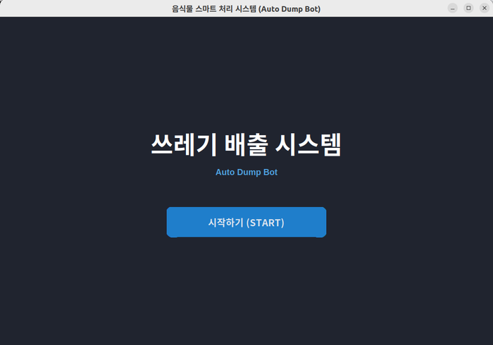
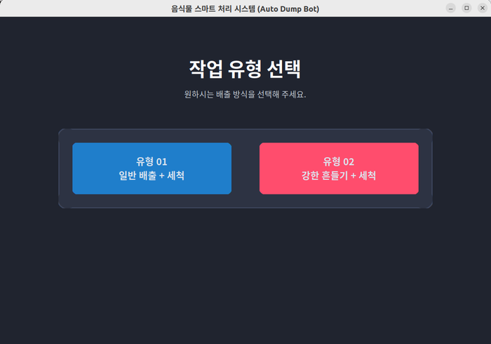
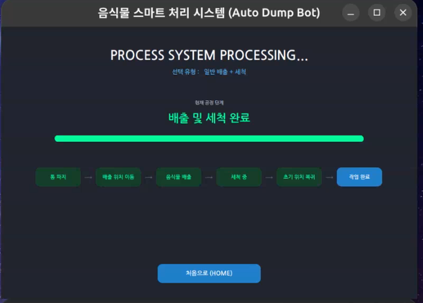
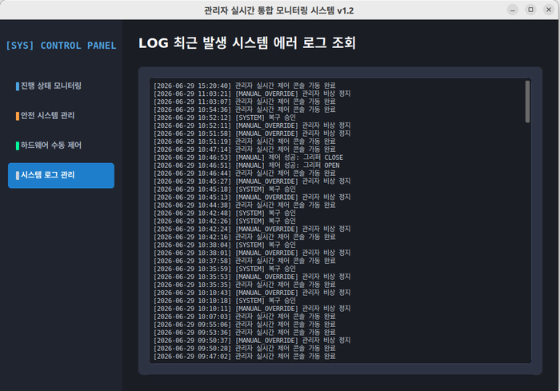
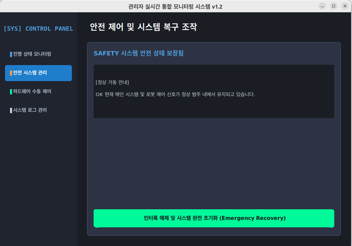
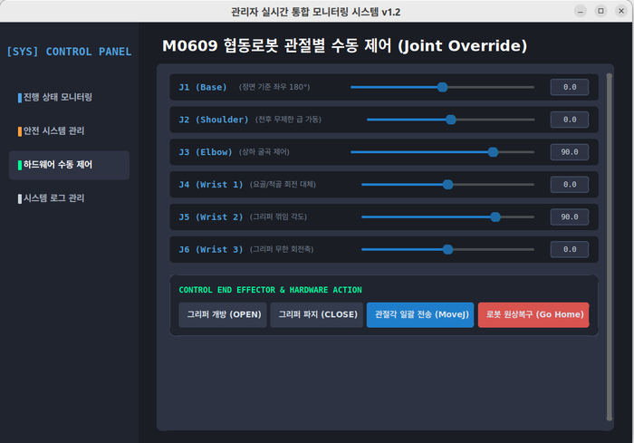

An autonomous food-waste collection and cleaning system built around a collaborative robot. It automates the full process: gripping → disposal → shaking → washing → returning.
User-facing process screens and admin monitoring and control screens built with Tkinter and CustomTkinter.

Press START to begin the process.

Choose between standard disposal and washing or intensive shaking and washing.

Displays the gripping, disposal, washing, and return stages in real time.

View the full event history, including emergency stops and recovery, in real time.

Release interlocks and fully reset the system.

Manually control the robot using individual J1–J6 joint sliders.
From UI prototyping and Tkinter-based HMI development to real-time integration with the backend and ROS2, this section outlines the challenges I encountered and how I addressed them.
The interface recreated and destroyed widgets on every screen change, making rendering unstable.
I investigated the overhead caused by destroying and recreating widgets each time.
I switched to a screen-management approach in which screens are created in advance and simply shown or hidden.
Screen transitions became immediate and stable.
When an error occurred, the front end expected error_msg while the back end returned message, so the error was not displayed.
I compared the API and WebSocket response specifications in both the front-end and back-end code.
I standardized the key as error_msg in both REST and WebSocket responses.
The correct error message is now displayed for all error conditions.
When the network became unstable, the WebSocket connection dropped and the HMI stopped receiving robot status updates.
I repeatedly tested connection-drop detection and reconnection timing.
I implemented an automatic reconnection loop in api_base.py that waits three seconds after detecting a disconnection.
The HMI now recovers automatically after temporary network interruptions.
The START request blocked the backend during process execution, so pressing RESET on the HMI after an emergency stop had no effect.
I traced the request flow and backend processing and identified the cause: a single worker was handling requests sequentially.
I separated RESET handling from the worker thread so it could be received immediately, and made the ERROR status and RESET button visible on the HMI in real time.
RESET now takes effect immediately after an emergency stop, allowing recovery to begin without delay.